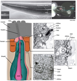
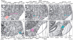
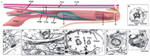

Nervous System
sensilla
deirid sensilla
Figures
NeuroFIG 22 - Positions of left-
side C. elegans sensilla
NeuroFIG 23 - Ultrastructure of
amphid cilia
NeuroFIG 24 - Anatomy of
amphid sensillum
NeuroFIG 25 - Cilia morphology
of the sensory neurons that
terminate in the lips
NeuroFIG 26 - Amphid neurons
and amphid nerve
NeuroFIG 27 - Cells of the
amphid sensilla
NeuroFIG 28 - Structure of the
amphid socket cell
NeuroFIG 29 - The cells of the
cephalic sensilla
NeuroFIG 30 - Structure of the
cephalic and outer labial
sensilla
NeuroFIG 31 - CEP, CEM and OL
cilia Ultrastructure
NeuroFIG 32 - Cephalic sheath
cells envelop the synaptic
neuropil
NeuroFIG 33 - Inner labial sensilla
NeuroFIG 34 - Ultrastructure of
inner labial sensillum
NeuroFIG 35 - Ultrastructure of
two lips

NeuroFIG 36 - Cells of the outer
labial sensilla

NeuroFIG 37 - Ultrastructure of
the anterior deirid sensillum

NeuroFIG 38 - Cells of the right
anterior deirid sensillum
NeuroFIG 39 - Posterior deirid
sensilla
NeuroFIG 40 - Sensilla of the
tail tip
NeuroFIG 41A-H - Structure of the
phasmid sensilla

NeuroFIG 41I - Structure of the
phasmid sensilla
NeuroTABLE 2 -Neuronal support
cells
NeuroTABLE 3 - Neuronal cilium
structure
NeuroMOVIE 1 - 3-D
reconstruction of amphid and
labial nerves